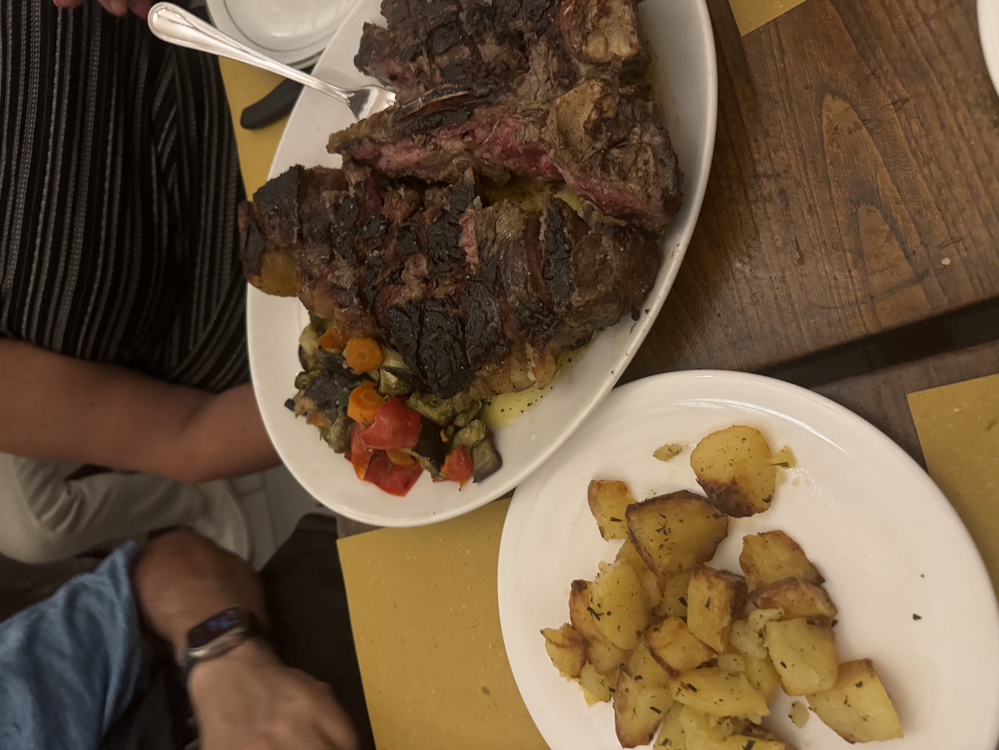

This week's recipe is dedicated to my dad. He is not a grill master (my mom is) but loves a simple meal such as a sauteed steak and some salad for dinner. Have a dinner as straightforward as this one reminds my family and our vacation to Florence, Italy in summer 2024, where steak is renowned in that city.
When I was younger, I did not enjoy steak and red meat, but have grown to appreciate it in moderation when learning the philosphy of Italian cooking. My dad has has always emphasized this, which is the importance of high quality ingredients cooked perfectly and simply to highlight their flavor. My inspiration for this meal was also Anthony Bourdain; I am a big fan of him and have been flipping through his cookbook over the weekend!
Place steaks in a hot, oiled pan with herbs and garlic. Season with salt and pepper and cook to desired temperature.


Anthony Bourdain's Appetites cookbook!
Our trip Florence 2024!!
